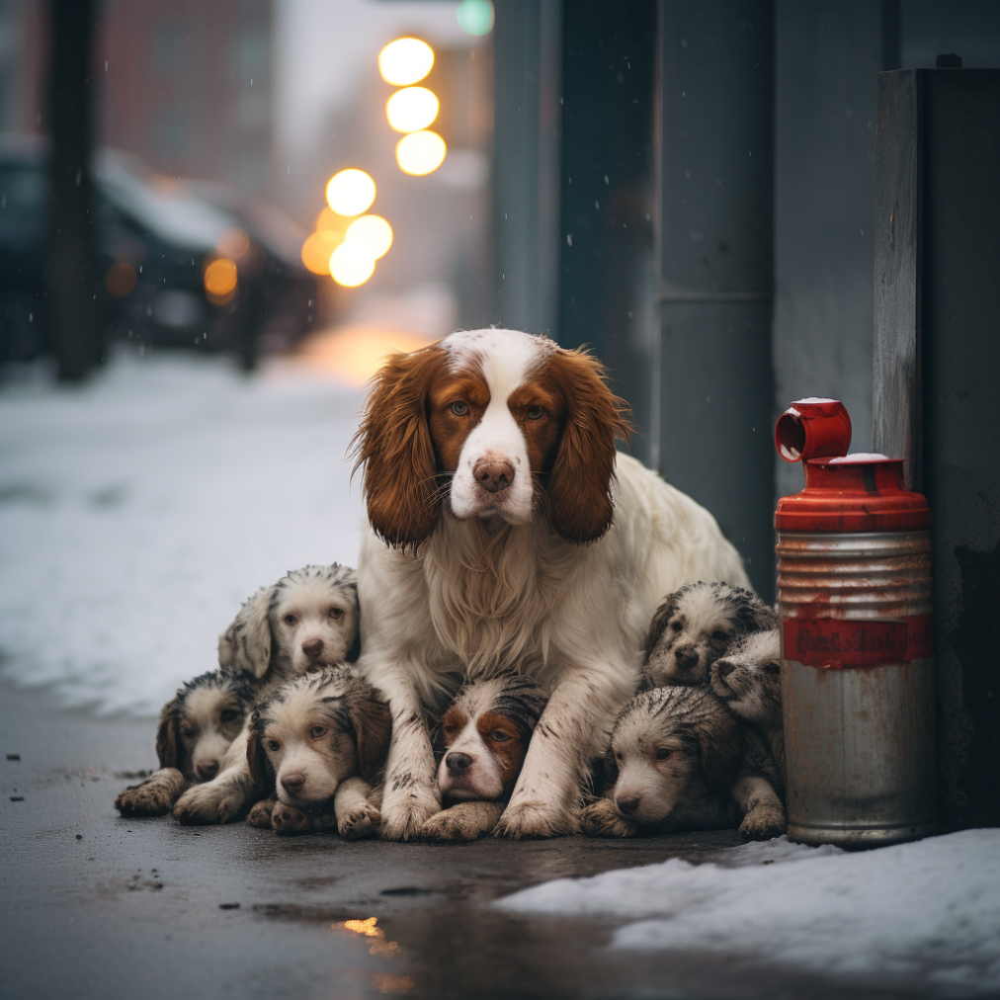
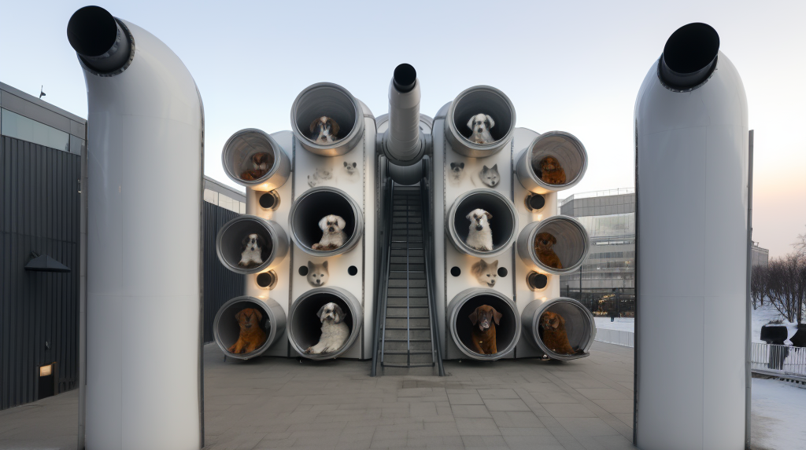
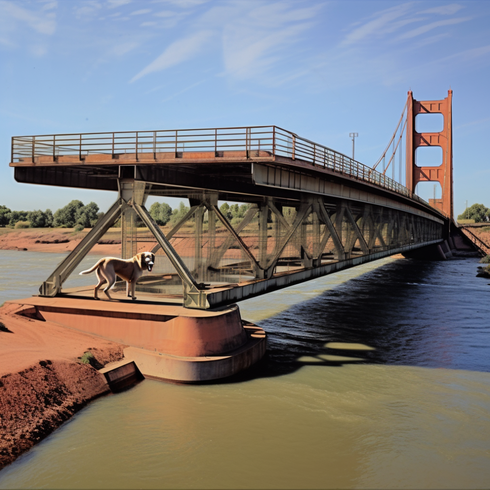

Solving a problem seems less challenging when having content and subject, as there are fewer options to consider. However, when dealing with a specific area, like Moscow city in our case, finding a solution requires imagination.

The city's frigid climate poses a challenge for the many stray dogs, prompting them to seek shelter and food in these bustling markets. As well as in extremely cold conditions, there are two crucial issues: 1) the risk of dehydration, and 2) the potential harm to dogs from ice-melting chemicals and salt used on roads and sidewalks. These pose significant medical concerns for dogs living on the streets during severe winter weather.
Ensuring the well-being of these dogs in winter requires not only addressing immediate health concerns but also providing adequate shelter and warmth.
The absence of proper shelter during the harsh Russian winters increases their vulnerability to injuries and illnesses. Without a safe and warm place to rest, they are at a higher risk of developing respiratory issues, frostbite, and other cold-related ailments. So, it is essential to establish shelters or designated areas where these homeless dogs can find refuge, both for the night and throughout the extended winter season, which in Russia lasts for a considerable duration.
Ventilation shafts can surprisingly play a transformation role in addressing the problem during the harsh winter months. Ventilation shafts have a special design that lets us add materials to keep the heat inside, making a cozy space for dogs.

The enclosed structures also protect them from rain and snow, lowering the chances of problems like frostbite or breathing issues. The openings in these structures let in fresh air and keep away harmful fumes.
Regular maintenance and oversight are essential to guarantee the sustained well-being of the dogs utilizing these repurposed structures. This can be the work for volunteers.
The design of these makeshift shelters is carefully chosen to ensure the dogs feel secure and recognize the structure when seeking warmth. Soft and insulating materials line the interior, offering a warm and comfortable space for the dogs to rest. The inclusion of raised platforms or bedding further ensures a dry and comfortable area, protecting the dogs from the cold ground. The lightning inside the ventilation shafts as well makes the suitable atmosphere for dogs.
In bustling urban environments, the focus often leans heavily towards ensuring the satisfaction of human residents, sometimes overlooking the specific requirements of our furry companions. Dogs, just like people, need a comfortable and secure commuting experience. Unfortunately, the unexpected loud noises from passing cars can be frightening for them, causing stress and anxiety. Especially, in Moscow city there are few non-highway bridges. So, it's important to create safe and quiet spaces for dogs to move around comfortably through the river.
The area beneath bridges emerges as an ideal space for dogs in urban settings. This location offers a significant advantage: firstly, the risk of dogs encountering car wheels, ensuring their safety.

Secondly, the ambient noise levels beneath bridges are comparatively lower, providing a quieter and less stressful environment for dogs. The idea is to create the underneath bridge. This as well protects them from adverse weather conditions.
But the design you are currently viewing doesn't align with the concept of being underneath bridges. This picture illustrates that we can construct something to cater to the needs of other creatures without altering existing structures. It aims to treat every creature equally, considering the needs of animals as we would for human beings. I appreciate this mindset, especially when thinking about the context of impoverished stray animals who appear to have fewer opportunities.